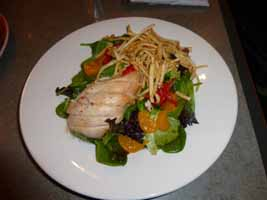
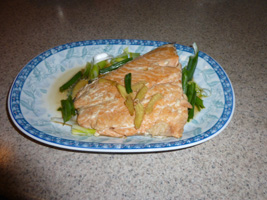

Why cook when you can buy?
It 's healthier, plan and simple ...
Processed food bought from groceries stores are convenient. These foods are high on fat, sugar, salt, artificial flavours or colours that might be a danger to Your health. Shopping with care and preparing Your own food is the logical thing to do. Everyone can learn to cook. They can find thousands of recipes and tips on the internet. And cooking gets easier with experience.
Start 2014 the Health Way!
Buy fresh produce, practise cooking and eat healthy meals!
Practice makes perfect
If you not been cooking for a while do not feel intimidated. What you need is practice. Make cooking an adventure. Everyone can cook! You just need to take the first step and the only way to learn is to do it!
How to begin? Get to know the kitchen tools; Buy the Ingredients for the receipe; Learn the Method for preparing the dish; Master the techniques in cooking by cooking more and more.